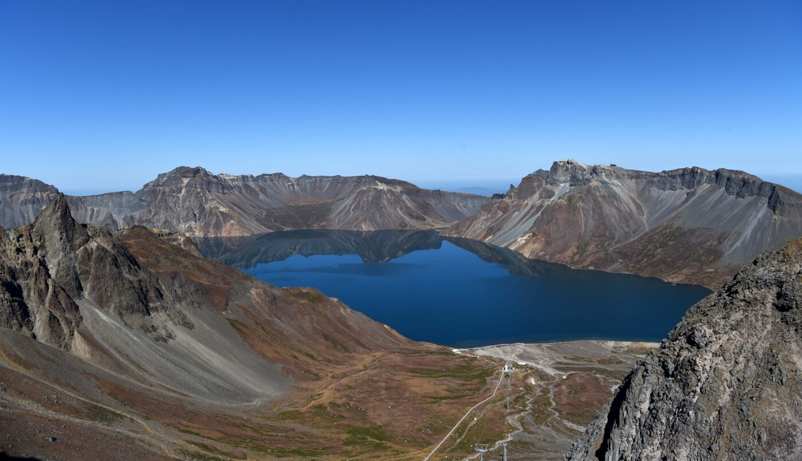

1절
동해물과 백두산이 마르고 닳도록
하느님이 보우하사 우리나라 만세
무궁화 삼천리 화려강산 대한사람
대한사람 대한으로 길이 보전하세

백두산
2절
남산위에 저 소나무 철갑을 두른듯
바람 서리 불변함은 우리 기상일세
무궁화 삼천리 화려강산
대한사람 대한으로 길이 보전하세
남산위의 소나무
3절
가을하는 공활한데 높고 구름없이
밝은 달은 우리 가슴 일편 단심일세
무궁화 삼천리 화려강산
대한사람 대한으로 길이 보전하세
가을하늘
4절
이 기상과 이 맘으로 충성을 다하여
괴로우나 즐거우나 나라 사랑하세
무궁화 삼천리 화려강산
대한사람 대한으로 길이 보전하세
충성